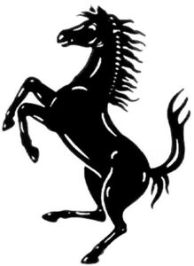

Trade Mark Journal No.2025/052 26 December 2025
WO0000001890652 (22)
Office of origin: Italy
Date of International Registration:13 August 2025
Date of designation in the UK:
13 August 2025

The mark consists of a sign depicting a strongly stylized rampant horse facing left.
- Class 22
- Vehicle covers, not fitted; tents [awnings] for vehicles; unfitted covers for boats and marine vehicles; protective covers for vehicles, not shaped; tarpaulins, not for use with vehicles; outdoor blinds of textile; awnings of fabric; awnings of plastic materials; tents, not for camping; awnings, not of metal; ladder tapes for jalousies; awnings for vessels; outdoor sun-blinds of textile; textile screens for protection against the wind; awnings [canopies]; down [feathers]; feathers for stuffing upholstery; feathers for bedding; eiderdown; animal hair; horsehair; camel hair; shorn wool; fleece wool; packing [cushioning, stuffing] materials, not of rubber, plastics, paper or cardboard; upholstery wool [stuffing]; cotton batting for use in clothing; wadding not of rubber, paper or plastic for padding and stuffing; cotton waste [flock] for padding and stuffing; fiberfill; polyester stuffing fibers; polyester batting; straw for stuffing upholstery; flock [stuffing]; grasses for upholstering; cotton batting for futon; wood shavings for stuffing; seaweed for stuffing; pouches of textile for packaging; bags for storage purposes; multi-purpose cloth bags; textile bags for merchandise packaging; bags [envelopes, pouches] of textile, for packaging; fabric gift bags; textile gift bags for wine; straw wrappers for bottles; shoe bags for storage; protection pouches made of fabric for storing purses when not in use; cloth bags for storage; mesh bags for washing laundry; laundry bags; fabric and polyester mesh nets used for storing toys and other household items; fabric mailing pouches; sacks; cloth bags for storage [but not luggage or travel]; straps, not of metal, for handling loads; strips for tying-up vines; wrapping or binding bands, not of metal; zip ties, not of metal; raw textile fibers; textile fibres; yarn fibers; cotton fibers; hemp fibres; coconut fibre; plastic fibres for textile use; synthetic fibers for textile use; semi-synthetic fibers for textile use; glass fibres for textile use; raw jute fiber; raw flax fiber; wool flock; textile filaments; raw silk; jute; raw or treated wool; combed wool; raw linen [flax]; hemp bands; tow; cocoons; kapok; raw cotton; ramie fibre; raffia; sisal; wood wool; car towing ropes; ropes, not of metal; sail gaskets; bindings, not of metal; wadding for filtering; nets for camouflage; rope ladders; canvas for sails; sails for ski sailing; marine sails; sail rigging; string; glass fiber netting; hammocks; cables, not of metal; packing rope; brattice cloth; sail halyards; sails for boats; covers for boats, not fitted; cords made of textile fibers; synthetic ropes; ropes for marine use; sails for sailboards and windsurfing; ropes and string; nets; tents and tarpaulins; awnings of textile or synthetic materials; sails; sacks for the transport and storage of materials in bulk; padding, cushioning and stuffing materials, except of paper, cardboard, rubber or plastics; raw fibrous textile materials and substitutes therefor.
FERRARI S.P.A.
Representative: Dr. Modiano & Associati SpA, Via Meravigli, 16, I-20123 Milano, ITALY